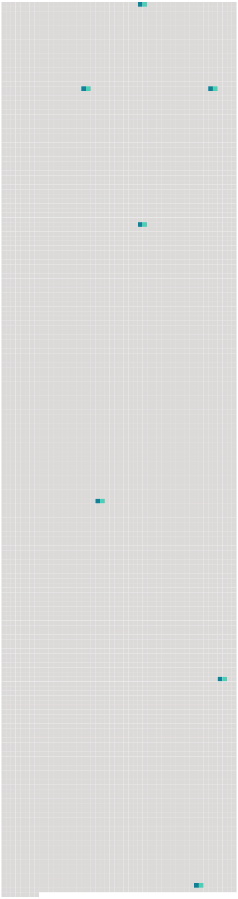

Longueur nb maillons : 7 mentions |
 |
L’ épreuve la plus rude avait été la mort d’ Ottilie, il y avait trois ans maintenant, à un âge où il est malaisé de se rebâtir [une vie] et de fonder un nouveau foyer. [29 phrases] Une foi profonde, touchante, dans la dignité de l’ art, dans la valeur morale de [la vie] ; mais elle se traduisait, le plus souvent, d’ une façon emphatique et ridicule. Tant de noble orgueil ; et, dans [la vie] , une admiration presque servile des supérieurs. [56 phrases] Le petit Christophe n’ avait encore aucune idée des difficultés de [la vie] ; il ne connaissait d’ autres limites à sa volonté que celle de ses parents, qui n’ était pas bien gênante, puisqu’ on le laissait pousser à peu près au hasard ; il n’ aspirait qu’ à devenir grand, pour pouvoir faire tout ce qu’ il voulait. [147 phrases] Tout en lui était ébranlé : son admiration pour les siens, le respect religieux qu’ ils lui inspiraient, sa confiance dans [la vie] , le besoin naïf qu’ il avait d’ aimer les autres et d’ en être aimé, sa foi morale, aveugle, mais absolue. [102 phrases] Quand l’ homme se reconnaît trop faible pour réaliser ses désirs et satisfaire son orgueil, il les reporte, enfant, sur ses parents, homme vaincu par [la vie] , sur ses enfants à son tour. [94 phrases]
Il avait peur du mystérieux qui s’ abrite dans l’ ombre, des puissances mauvaises qui semblent guetter [la vie] , du grouillement de monstres, que tout cerveau d’ enfant porte en lui avec épouvante et mêle à tout ce qu’ il voit : derniers restes sans doute d’ une faune disparue, des hallucinations des premiers jours près du néant, du sommeil redoutable dans le ventre de la mère, de l’ éveil de la larve au fond de la matière. |
 |
La ressource peut être téléchargée sur la page Ortolang
Si vous avez des questions ou vous voyez des erreurs, merci d'envoyer un mail à silvia.federzoni89@gmail.com
Site développé par S. Federzoni (contact)